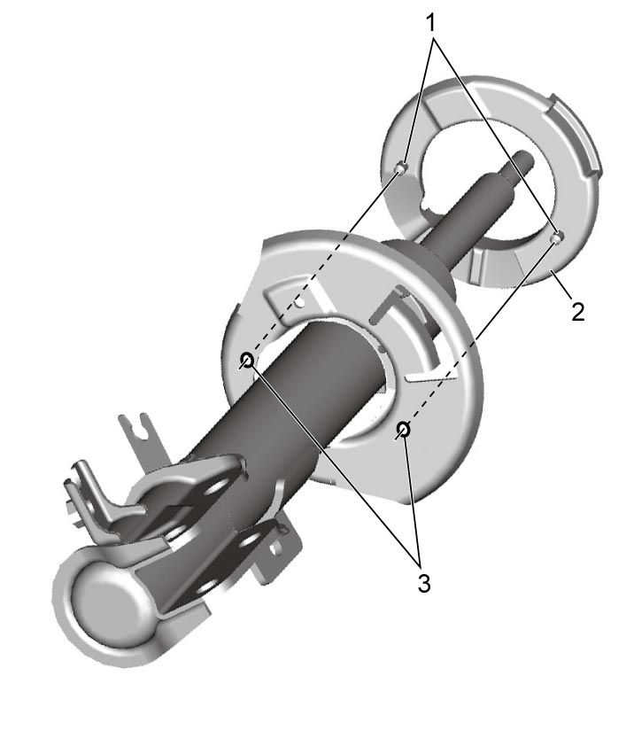

2B
| Front Strut Assembly Disassembly and Reassembly |
Failure to take proper precautions when compressing the coil spring can result in severe personal injury.
•Attach the spring compressors to the positions that allow compressing the spring evenly.
•Do not use an impact wrench when compressing the coil spring.
•When using commercially available spring compressors, follow the manufacturer’s instructions described in the manual attached to the spring compressors.
•Do not use an impact wrench when compressing the coil spring.
•When using commercially available spring compressors, follow the manufacturer’s instructions described in the manual attached to the spring compressors.
NOTICE:
The strut support lower nut is pre-coated with friction stabilizer. If the nut is reused, it may work loose.
Never reuse the strut support lower nut.
Disassembly
1)Attach special tool (A) to coil spring as shown. Screw in special tool bolts (1) alternately until coil spring tension is released from strut. Rotate strut to check that it is free of coil spring tension. Record total length of coil spring when it is compressed.

 "Expand image")
2)While keeping coil spring compressed using special tool, remove strut support lower nut using hexagon wrench as shown in figure.
 "Expand image")
3)Disassemble front strut assembly. 
Reassembly
1)Compress coil spring using special tool (spring compressor) evenly until total length “a” becomes the same length as recorded in disassembly.
 "Expand image")
| [u]: | Upper side (large diameter) | [l]: | Lower side (small diameter) |
2)Install coil spring lower seat (2) to front strut by fitting its protrusions (1) into holes (3) in front strut.

 "Expand image")
3)Install compressed coil spring to front strut by fitting coil spring end (1) with protrusion of spring lower seat (2) as shown in figure.
NOTE:
Spring end should not ride on step in spring lower seat.
 "Expand image")
4)Set bump stopper.
5)Set strut dust cover (1) over three claws (2) of damper cap (3).
 "Expand image")
6)Pull strut rod as far up as possible and use care not to allow it to retract into strut.
7)Install coil spring upper seat.
8)Install strut bearing, strut bearing plate, strut support and new strut support lower nut in this sequence.
Then tighten strut support lower nut to specified torque while holding stud using hexagon wrench.
Then tighten strut support lower nut to specified torque while holding stud using hexagon wrench.
 "Expand image")
9)Remove special tool (spring compressor) from coil spring. Then, check that coil spring end does not ride on protrusion of spring lower seat.